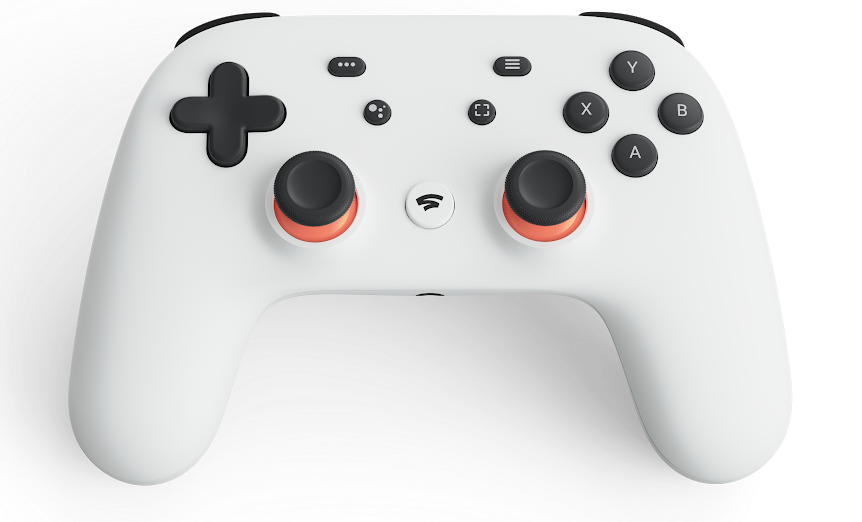

The challenge
Coordinate motors, noisy wheel feedback and diverse sensors across two computing layers while maintaining predictable stop behaviour.
01 SOTO-ROBOTICS R&D case study
A multidisciplinary robotic platform developed by SOTO-ROBOTICS to explore safe autonomous assistance on the golf course—from motor control and sensing to ROS 2 perception and a field-ready operator interface.
02 Project overview
The objective was not simply to motorise a golf trolley. It was to create an extensible engineering platform capable of manual operation, person-following research, environmental sensing and future autonomous navigation—without losing sight of real-world safety.
The work brings together a differential-drive chassis, low-level AVR firmware, a Raspberry Pi 5 running ROS 2, multi-sensor perception, live telemetry and a purpose-built web console.
Development follows an incremental R&D process: model, integrate, bench-test, measure, diagnose and only then advance towards controlled ground trials.
Coordinate motors, noisy wheel feedback and diverse sensors across two computing layers while maintaining predictable stop behaviour.
Separate deterministic hardware control from high-level robotics, connect them through a validated serial protocol and test each layer independently.
An integrated prototype with manual drive, telemetry, fused odometry, perception experiments, simulation and layered safety controls.
03 Engineering scope
Developed a modular Arduino C++ control layer and a ROS 2 Jazzy stack for command routing, odometry, localisation experiments, person-following and operator control.
Integrated dual motor actuation with Hall and optical encoder feedback, IMU, current monitoring, GPS, RGB-D vision, two LiDAR units and provision for short-range ToF sensing.
Configured a differential-drive layout around 270 mm wheels and passive casters, then defined the robot geometry, sensor frames and collision model for physical integration and simulation.
Created dedicated diagnostics, repeatable encoder sweeps, motor bench routines, simulation scenarios and live dashboards to expose faults before autonomous operation.
04 Mechanical integration
The mechanical strategy retains the practical structure of a commercially available trolley and adds purpose-designed interfaces where standard hardware cannot meet the robotic requirements.
Custom 3D-printed parts provide a rapid, adaptable route for mounting sensors, routing cables, housing electronics and aligning components. This hybrid approach reduces fabrication time while allowing the robotic package to evolve through repeated physical trials.
Overall view showing how the robotic system is incorporated into the original trolley structure.
Printed brackets and enclosures bridge the geometry between sensors, electronics and the donor trolley.
Controller, power and sensor connections arranged for inspection, iteration and fault finding.
The off-the-shelf trolley contributes an established frame, wheel arrangement and load-carrying function, concentrating development effort on robotic capability.
3D printing enables fast geometry changes as sensor positions, cable routes and component selections are refined during prototype testing.
Modular mounts and accessible electronics support inspection, replacement and controlled experimentation across the evolving platform.
05 System architecture
Time-critical motor and safety functions stay close to the hardware. Compute-intensive perception, supervision and operator tooling run on the edge computer.
Stadia controller
Responsive web console
Emergency stop
ROS 2 orchestration
Perception & following
Odometry & telemetry
Motor PWM & direction
Encoder acquisition
Watchdog & limits
Visual tracking and 2D ranging provide complementary environmental observations for follower and obstacle-gating research.
Two encoder technologies are compared in a shared 45 PPR domain, with weighted fusion and fail-safe fallback when they disagree.
Orientation, motor load and position data enrich diagnostics and support heading, localisation and protection functions.
06 Systems engineering
The trolley is treated as a system of people, software, electronics, mechanics, information and operating procedures—not as a collection of components.
A V-model and MBSE-inspired workflow connects operational needs to functions, logical architecture, physical implementation, interfaces and verification evidence. The artefacts below are reconstructed from the implemented prototype and its test record.
Scope statement: this is a preliminary engineering baseline for an R&D prototype. It is not an ISO 26262 assessment, product certification, safety case or permission for unsupervised operation.
Assist a golfer by carrying equipment, following or accepting manual commands while remaining observable and controllable during field trials.
Translate the need into measurable motion, perception, control-authority, stopping, telemetry and maintainability requirements.
Decompose the mission into operate, perceive, decide, move, protect, estimate, inform, verify and support functions.
Allocate functions across the operator, web HMI, ROS 2 edge computer, embedded controller, sensors and mechanical plant.
Integrate bottom-up, exercise interfaces, inject stale or invalid inputs and retain test results as objective evidence.
A System context
Commands flow left to right; state, diagnostics and evidence return to the operator. The boundary includes the robot and its local edge-compute stack.
B Control architecture
Multiple behaviours may propose motion, but a single arbiter selects and limits one fresh source before commands cross the embedded boundary.
Modes, manual drive, web dead-man, speed limits and emergency request.
HMI + Stadia + field supervisorPerson, face session, obstacles, depth, pose and swing observations.
Kinect + upper/lower LiDAR + CoralControl authority, target association, obstacle gating and navigation readiness.
ROS 2 supervision and behavioursDifferential velocity conversion, heading correction and motor actuation.
Bridge + Arduino firmware + driversWheel odometry, encoder confidence, IMU state, GPS and mapping.
Encoder fusion + EKF + SLAMSource timeout, command clamps, stop states, takeover and perception freshness.
Distributed software controlsLive telemetry, health, maps, diagnostics, media and recorded test results.
Fairway OS + Python test toolsNeed → requirement → function → component/interface → verification method → result. The current repository contains substantial test evidence, but not yet a complete approved RTM.
E Interface control
| ID | Boundary | Exchange | Protocol / physical interface | Control or constraint |
|---|---|---|---|---|
| IF-01 | Operator ↔ Fairway OS | Modes, STOP, limits, telemetry, map and media | HTTP, WebSocket, responsive browser | Web joystick is dead-man; loss of fresh packets returns zero |
| IF-02 | Home Assistant ↔ Fairway OS | Canonical operator interface | HTTP iframe | One UI implementation; HA authentication does not protect the direct Pi URL |
| IF-03 | Stadia ↔ Pi | Drive axes, takeover and safety buttons | Bluetooth / Linux evdev | Takeover on connect; configured deadzones; current deployed profile does not require neutral-to-arm |
| IF-04 | ROS 2 nodes | Commands, state, images, scans and transforms | DDS over Zenoh; ROS topics / TF | Single output mux; source freshness and mode authority |
| IF-05 | Pi ↔ Arduino | Velocity, raw diagnostics and telemetry | USB ASCII serial at 115,200 baud | Line validation, bounded raw command length and independent timeouts |
| IF-06 | Arduino ↔ motor drivers | PWM, direction, brake and STOP | Timer5 + digital I/O | Pin-specific implementation; pin 44 requires direct OCR5C handling |
| IF-07 | Wheels ↔ Arduino | Rotation pulses | Hall + optical interrupts, 45 effective PPR | Hall-primary confidence logic; optical-only motion is rejected |
| IF-08 | IMU ↔ Arduino | Acceleration, rate, pitch and yaw | I2C, 200 Hz target | Filtering, calibration and heading feedback; tilt logic exists |
| IF-09 | Power path ↔ Arduino | Left/right motor current | ACS712 analogue inputs | Telemetry implemented; automatic overcurrent trip not evidenced |
| IF-10 | GPS ↔ Arduino/Pi | Fix, satellites and position | Serial3 at 9,600 baud / ROS NavSatFix | Navigation gated by freshness, fix and quality; antenna transform remains provisional |
| IF-11 | Kinect ↔ Pi | RGB, depth, body, face and tilt | USB / ROS image topics | Freshness and identity gates; not a safety-rated perception channel |
| IF-12 | Dual LD19 ↔ Pi | Upper and lower 2D range scans | USB serial at 230,400 baud / LaserScan | Upper scan supports behaviour; lower scan is monitor-only pending geometry validation |
| IF-13 | TF-Luna provision | Short-range distance | I2C 0x10 / 0x11 via 3.3 V adaptation | Compiled support, disabled at boot and not credited for stopping |
F Provisional requirements baseline
These requirements are derived from implemented behaviour and recorded configuration. They should be reviewed with stakeholders and placed under formal change control.
| ID | Provisional system requirement | Allocation | Verification | Current evidence |
|---|---|---|---|---|
| SYS-01 | The system shall default to a non-moving state when no authorised fresh command source is available. | Supervisor, mux, bridge, firmware | Fault injection / timeout test | Implemented; multi-layer timeout evidence, full chain timing TBC |
| SYS-02 | The system shall constrain commanded velocity to the approved prototype operating envelope. | Mux, Stadia node, firmware | Boundary-value test | ROS unit tests verify ±0.45 m/s and ±0.90 rad/s mux clamps |
| SYS-03 | The operator shall be able to cancel autonomous following through deliberate physical-controller input. | Stadia node, supervisor | Integration test | Takeover and authorisation revocation implemented |
| SYS-04 | Follower motion shall require a connected controller, explicit authorisation, fresh follower state and an enabled person track. | Supervisor, Stadia, follower | State-transition test | Fail-closed selection has automated tests |
| SYS-05 | Forward follower motion shall be inhibited when required obstacle observations are stale, unknown or blocked. | Follower obstacle gate | Unit + controlled obstacle test | Core unit tests pass; physical coverage and stopping distance TBC |
| SYS-06 | The system shall report command, motor, encoder, IMU, GPS, perception and service freshness to the operator. | Bridge, web server, HMI | Interface inspection | Live WebSocket dashboard implemented |
| SYS-07 | The embedded controller shall set motor demand to zero within 1.0 s of a lost ROS velocity command. | Arduino firmware | Timed disconnect test | Firmware timeout implemented; measured end-to-end stop TBC |
| SYS-08 | The system shall preserve diagnostic evidence sufficient to reproduce calibration and integration decisions. | Test tools and repository | Configuration audit | Extensive records exist; formal configuration baseline remains incomplete |
G Preliminary safety engineering
The assessment uses qualitative severity and likelihood for prioritisation. ISO 26262 HARA concepts inform the structure, but ASIL is deliberately not assigned: this trolley is not being assessed as a road-vehicle item, operational exposure is not quantified, and controllability data is unavailable.
Mode gating, single-source arbitration, source freshness, Pi watchdog and firmware timeout drive demand to zero after communication loss.
Evidence: code + ROS unit tests. End-to-end stopping time and distance still require measurement.Physical Stadia movement revokes follower authorisation, sends zero and transfers authority to manual control.
Evidence: implemented logic. Human-factors validation remains open.Command clamps, deadzones, acceleration/deceleration ramps and stop-before-reversal reduce abrupt or excessive demand.
Evidence: configuration + unit tests. Safe limits depend on mass, slope and surface.Follower logic requires fresh LiDAR/depth observations and uses target continuity and visual identity checks.
Gap: blind zones, environmental performance and physical stopping distance are not validated.The guard detects conflicting publishers, motion while stopped and limit violations; ACS712 channels expose motor current.
Gap: the configured guard is monitor-only and no automatic overcurrent shutdown is evidenced.Firmware contains tilt thresholds, correction and emergency-stop logic, but the production ROS controller repeatedly commands balance off.
Gap: behaviour is not a validated safety function in the deployed operating configuration.The red web STOP and software stop chain are useful operational controls.
Gap: no independent hardwired mushroom, safety relay or motor-power contactor is evidenced in the reviewed baseline.Priority combines credible harm severity with qualitative likelihood before additional mitigation. It is not an ASIL or certified risk rating.
| ID | Hazardous event | Potential effect | Existing controls | Key gap / recommended action | Priority |
|---|---|---|---|---|---|
| HZ-01 | Unintended motion or failure to stop | Impact, trapping or trolley runaway | Authority model, mux zero, multiple watchdogs, software STOP | Add independent hardwired E-stop and power isolation; measure worst-case stop time/distance on representative load and slope | Critical |
| HZ-02 | Forward collision during follower operation | Person struck or equipment/property damage | Upper LiDAR, depth freshness, obstacle gate, speed limit | Validate field of view, detection probability and braking envelope across clothing, sunlight, rain and terrain | High |
| HZ-03 | Reverse or low-obstacle collision | Foot/ankle impact, caster obstruction or tip | Unknown-rear logic can inhibit retreat in obstacle core | Integrate and validate lower/rear sensing or contact bumpers; lower LiDAR is currently monitor-only | High |
| HZ-04 | Wrong-person acquisition or target jump | Unexpected trajectory into people or hazards | Face session, visual/LiDAR gating, continuity checks, controller authorisation | Quantify false accept/switch rates; require safe reacquisition and operator confirmation after track loss | High |
| HZ-05 | Tip, rollaway or unstable behaviour on slope | Crush/impact, damaged equipment | Low speed, IMU telemetry, firmware tilt logic | Define slope/payload limits, centre-of-gravity envelope, parking restraint and validated static/dynamic stability tests | High |
| HZ-06 | Electrical overcurrent, short circuit or battery thermal event | Fire, burns or loss of control | Current telemetry; motor-driver stop lines | Confirm battery chemistry, BMS, fuse, contactor, cable protection, enclosure and automatic trip architecture | Critical |
| HZ-07 | Unauthorised or malformed network command | Unexpected mode or motion request | Input ranges, source mux and local-network deployment | Add authenticated API, TLS or trusted reverse proxy; restrict raw diagnostics and segment the robot network | High |
| HZ-08 | Sensor data stale, biased or geometrically misregistered | Incorrect localisation, obstacle decision or heading | Freshness checks, confidence logic and TF model | Complete sensor calibration, lower-LiDAR pose and GPS antenna transform; add plausibility/fault-injection tests | High |
| HZ-09 | Unexpected movement during maintenance or diagnostic test | Hand injury, impact or entanglement | Warnings, explicit test modes, zero defaults and documented bench practice | Use keyed maintenance enable, wheel-off-ground fixture, exclusion zone and two-person test procedure | High |
No unsupported value is treated as fact. The following must be measured or confirmed before detailed design limits can be justified:
07 Software design
01 read_serial_commands();
02 update_imu_and_current();
03
04 if (command_is_fresh) {
05 constrain_velocity();
06 apply_heading_correction();
07 drive_differential_motors();
08 } else {
09 safe_stop();
10 }
11
12 publish_telemetry();Compile-time feature flags keep the AVR build configurable while a cooperative superloop avoids blocking the safety path.
A velocity multiplexer separates manual, gesture, follower and navigation sources so control authority is explicit.
A FastAPI and WebSocket interface exposes modes, sensors, motor state, maps and diagnostics from any device on the robot network.
Manual control Verified production mapping
The physical Stadia controller provides immediate manual takeover and safety actions. Deliberate left-stick movement cancels follower operation; connection takeover sends an initial zero command before manual demand is accepted.
The D-pad, shoulder, Assistant and Capture controls are intentionally unassigned in the production ROS 2 node.

Open full-size controller image ↗08 Safety by design
Safety is implemented across the control chain rather than delegated to a single switch or software node.
09 Development & validation
Special-purpose sketches and Python tools isolate motors, sensors and communications. Recorded sweeps compare Hall and optical counts, identify unreliable operating regions and inform the firmware configuration.
Gazebo models reproduce the drive geometry and sensor frames before higher-level behaviours are exercised on hardware. Results and limitations are documented as part of the development record.
Integrated R&D prototype. Core subsystems and safety paths have been bench-tested; calibration and controlled ground validation remain active engineering work. No claim of production readiness is made.
10 Engineering journey
Differential motor control, pin mapping, direction logic and safe-stop behaviour established on the Arduino platform.
Hall, optical, IMU and current sensing integrated with dedicated test routines and serial telemetry.
Bidirectional serial protocol connected deterministic firmware to Raspberry Pi robotics software.
RGB-D, LiDAR, gesture and face-session experiments added within an explicit control-authority model.
Live web tools, simulations and structured test records now support progressive system integration.
11 Role & contribution
Led by Jose M Soto V through SOTO-ROBOTICS, this project demonstrates practical consultancy R&D across embedded systems, robotics software, electronic integration, mechanical packaging, troubleshooting and verification.
Responsibilities span system architecture, component integration, firmware and Python development, ROS 2 implementation, diagnostic tooling, test execution and technical documentation.
12 Engineering consultancy
SOTO-ROBOTICS provides engineering consultancy for robotics, embedded systems, automation, prototyping and multidisciplinary product development.
Start a conversation